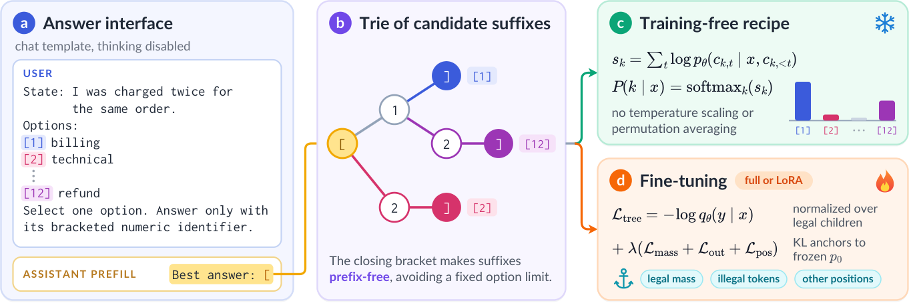
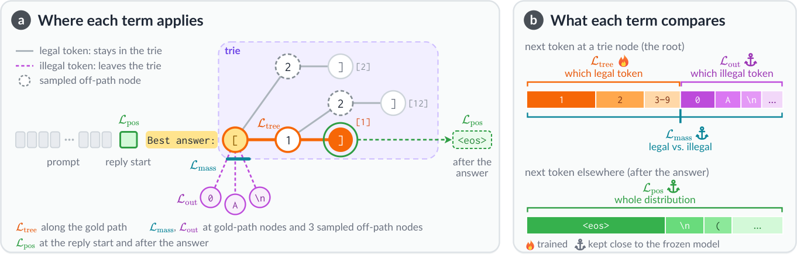
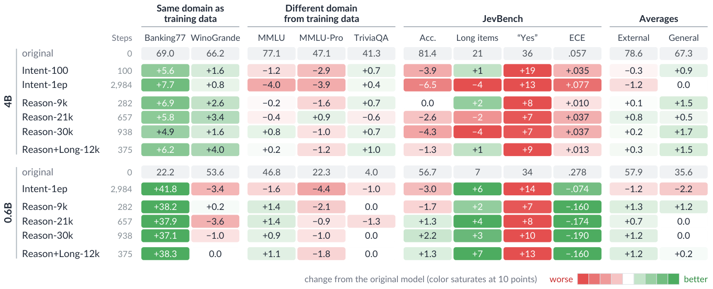
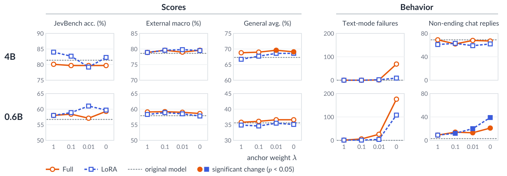
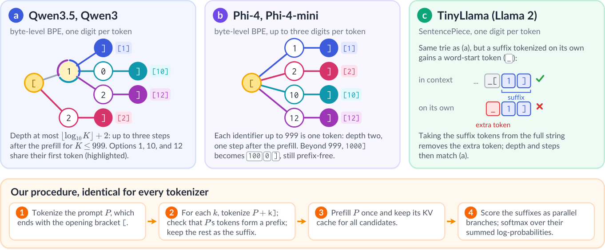

LLM2Jev：LLM 本来就是 Jev 式决策模型——何时微调、如何微调
原文：LLM2Jev: LLMs Are Already Jev-Style Decision Models—When and How to Fine-Tune Them · arXiv 2610.02076 · Yinheng Li, Justin Wagle（Microsoft）· 2026-10
译文为社区学习用途的非官方中文翻译，版权归原作者所有。公式按原文以简明形式重排；论文全部 5 幅插图已从 arXiv 源码包提取并随文嵌入。
作者与来源
📄 原文 PDF（随本页附带）：media/llm2jev-2610.02076.pdf
Yinheng Li、Justin Wagle，均为微软研究员（论文预留微软邮箱联系）。这篇论文回答一个本库反复出现的问题：训练-free 直接读 next-token 概率的路线（27 号教程的实践）到底有多能打？微调又在什么时候才值得做？
论文给出了目前最系统的答案，并且与本库多篇条目直接互文：
免训练结论：不改架构、不改分词器，Qwen3.5-4B 零样本在公开 JevBench 上拿 81.4%，追平同底座的社区微调模型（SemIf 80.5%、reflex 4B 79.7%），校准还更好——27 号路线的严格验证。
微调结论：收益是"靶向的"而非"普适的"——小模型、高基数意图路由收益大；强底座上全参微调反而倒退（81.4%→76.2%），只有 LoRA + 强 KL 锚定能到 84.0%——与 34 号（Unsloth 工程路线）互为印证又互为补充：Unsloth 走"Clef 式打分头改架构"，本文走"架构保持"，两条路线第一次可以在同一张表上比较。
顺序偏差（31 号的主题）、社区模型盘点（附录 I 对应 15 号 JevBench 榜单）、Winnow/SemIf/reflex 等模型（演讲材料 local-jev-bench 上的熟面孔）全部在这篇论文里同框。
摘要（全译）
Jev 式决策模型在预定义选项上返回类别概率分布，不生成自由文本，使软件系统可以直接消费其输出。本研究考察通用 LLM 在多大程度上开箱即有这种能力，以及微调何时才真正必要。我们提出 LLM2Jev——一个保持架构不变的框架，从括号数字标识符上的 next-token 概率中直接提取校准过的决策。LLM2Jev 同时提供免训练推理配方与微调目标：后者用树分解的 listwise 损失优化候选选择，同时用 KL 散度惩罚把辅助预测锚定在基座模型上。在 Qwen3.5-4B 与 Qwen3-0.6B 上的评估表明：现代 LLM 天生就是有效的决策模型——不训练时，4B 模型追平基于同一底座的社区 Jev 式模型，超过字母-logit 读出，支持任意选项数，并原生处理图像上的多模态决策。微调提供的是靶向而非普适的收益——显著改善更弱的模型和特定任务（如多选项意图路由），但对强底座的收益递减。关键的是，我们的 KL 锚定防止了对话文本生成中的行为退化，在强模型上 LoRA 给出最佳表现。
1 引言

Best answer: [ 预填充；(b) 候选后缀构成前缀树，闭括号保证前缀无关、选项数不受限；(c) 免训练配方：对后缀累加对数概率后 softmax，无温度缩放与排列平均；(d) 微调：ℒ_tree 训候选间选择，加 λ(ℒ_mass+ℒ_out+ℒ_pos) 三个 KL 锚定贴住冻结基座" loading="lazy" />软件系统每天都要在预定义选项上做决策：工单分诊、识别用户意图、判断证据是否满足某条规则。标准对话模型也能做这些事，但生成的回答需要解析成结构化值，带来延迟和格式错误的风险。Jev（Almeida, 2026）的做法是直接返回候选选项上的概率分布、不生成自由文本，让下游软件原生消费预测。Jev 追求快和省，同时保留 LLM 的通用性：接入新任务只需要一条指令 prompt 加一组候选选项，不需要专门训一个分类器。这个范式已吸引大量关注——尽管 Jev 的权重与训练方法仍是专有的，公开的 JevBench 榜单（Benchmark Heaven, 2026）已列出超过 60 个社区 Jev 式模型。
社区模型的一个核心设计分歧是是否更新模型参数。很多方案微调底座，常引入自定义分类头或用教师模型合成问题训 LoRA；另一些直接用冻结 LLM。成绩差异巨大：例如 Plumb（crh225, 2026）在 Qwen3.5-4B 上用 LoRA 经多轮教师生成查询与困难负样本挖掘迭代训练，公开 JevBench 达 89.6%；而同为 Qwen3.5-4B 改造的 Hopper（HopitAI, 2026）和 reflex（kshetrajna12, 2026），成绩与 SemIf（Lee, 2026）——一个从完全冻结的模型上直接读选项字母 logits 的方案——相当（82.3%、79.2% 对 81.0%）。这个强烈反差引出两个根本问题：预训练 LLM 在多大程度上天生具备决策能力？什么条件下微调才有实际收益？
我们的方法：利用现成 LLM
我们提出一个把现有因果 LLM 变成 Jev 式决策模型的框架，不改变架构、分词器或词表，并尽量减少对任务特定训练的依赖。与许多引入自定义分类/指针头（须为每个新底座重新训练）或保留 token 的社区模型不同，架构保持的设计带来三个好处：
每个底座零架构开销：同一套 prompt 约定与并行打分流程对任何因果 LLM 开箱即用，新模型发布即可评测，只有需要靶向适配时才微调。
直接继承基座的规模红利：基础模型的推理与知识进步，决策准确率随之提升，无需新的决策专用语料。
原生多模态支持：带视觉编码器的多模态 LLM 走同一接口即可做图像分类与视觉问答，无需多模态微调（§4.2）。
两个互补配方
LLM2Jev 在统一接口下给出两个配方（图 1）。免训练配方：候选项用括号数字索引 [1]…[K] 排版，在助手前缀 Best answer: [ 上条件化生成，对候选续写 token 计算联合概率；不需要标注、不加参数、不扩词表。微调配方：走同一接口，更新全参或 LoRA 适配器——树分解的 listwise 损失训练模型在合法候选间做区分，三个辅助 KL 散度惩罚（锚定）防止概率在其他生成场景漂移。无论哪种配置，模型仍是能正常生成文本的因果 LLM。
发现
在 Qwen3.5-4B 与 Qwen3-0.6B 上评估两个配方，覆盖六种数据配比、锚定强度消融与参数高效微调消融；评估横跨外部基准、公开 JevBench、通用语言能力、多模态图像基准与对话行为。三个核心问题的答案：
不微调有多强？（§4.2）相当强：预训练 LLM 天生就是有效的决策模型。现成 Qwen3.5-4B 追平同底座的社区模型，超过字母-logit 读出，天然扩展到任意候选数，概率校准良好；多模态视觉决策还能零样本涌现。
微调何时有用？（§4.3）主要在训练数据直接覆盖基座具体短板时。小模型和靶向领域（如高基数意图路由）收益明显；不加区分地用在强模型+宽泛基准上收益递减，甚至负迁移。重要的是，这种靶向适配对通用能力的损伤可忽略。
微调该怎么做？（§4.4）要防退化生成、保住对话能力，主要靠 KL 锚定。强模型最优解是 LoRA + 紧锚定；小模型更适合轻正则。
2 背景与相关工作
Jev 与 JevBench。 Jev 把决策任务形式化为离散候选集上的类别分布，覆盖三种规范格式（Almeida, 2026）：choice（K 选一）、noul（是非校验）、score（有序打分）。JevBench（Benchmark Heaven, 2026）从智能、校准、延迟、成本四个维度评测决策模型，公开 231 题（48 易、72 标准、111 难），留出与密封套件不公开。本研究只在公开题上评估，因此报告的是诊断性准确率而非官方榜单名次。
社区 Jev 式模型。 冻结模型读出直接从输出 token 概率取预测、不动参数：SemIf 与 open-alternative-jev（IkerMoel, 2026）从冻结 Qwen3.5-4B 读选项字母 logits；Cygnet（blockbrain-ai, 2026）和 jqv（Octalab, 2026）对更大模型做拟合温度缩放；AnyJev（Zhang et al., 2026）用循环排列与批级校准缓解选项顺序与先验偏差。微调读出则调参以对齐任务：JevK5（allebee, 2026）、Plumb、Hopper、reflex 在 Qwen3.5-4B 上训 LoRA，其中 JevK5 与 Plumb 用教师模型生成并过滤的困难合成题 + 公开数据回放训字母 logits。与本文正则策略概念上最接近的是 decider（Mapika, 2026）：全参微调的同时要求在回放样本上的预测匹配母模型的答案分布。
概率校准。 在自动化决策系统里，预测概率与 top-1 选择同样重要——下游逻辑要靠它把低置信案例转人工。神经网络与 LLM 常见过度自信（Guo et al., 2017 等），严格校准评估必不可少。我们报告两个标准指标，均直接从原始分布计算、不做事后温度缩放：ECE（期望校准误差，按概率分桶统计置信度与实际准确率的加权绝对差）与 Brier 分数（预测概率向量与 one-hot 目标的均方误差，同时奖励准确与校准）。两者都是越低越好。
3 LLM2Jev 框架
3.1 问题形式化
一个决策实例 = 上下文状态 s + 候选集 o₁,…,o_K + 目标选择 y∈{1,…,K}，目标是产生候选集上的概率分布 P(k|s)。Jev 三种任务类型都能干净映射：是非查询=两个描述"是/否"接受标准的选项；有序打分=一串有序的档位选项。
3.2 答案接口
用默认对话模板（关闭思考模式）构造用户 prompt：
State: {s}
Options:
[1] {o1} … [K] {oK}
Select one option. Answer only with its bracketed numeric identifier.每个候选项单独一行。把助手的回合条件化在固定前缀 Best answer: [ 上——选第 k 项就等于续写 k]。这个续写定义为候选后缀 c_k=(c_{k,1},…,c_{k,n_k})。三个关键优点：
无界选项容量：每个候选后缀都以闭括号结尾，所以任何完整后缀都不可能是另一个的前缀（
1]不是12]的前缀）。这个前缀无关性质支持任意大的候选集 K——不像字母读出天生受限于 16 或 26 个选项。浅层后缀字典树：候选后缀自然构成前缀树（trie，图 1），深度由分词器决定。逐位处理数字的分词器（如 Qwen）深度至多 ⌊log₁₀K⌋+2；按组编码数字的分词器（如 Phi-4）把 999 以内整数编成单 token，树深只有 2。打分规则与损失对任意树结构通用（附录 C）。
生成兼容：模型保留标准自回归生成结构化答案的能力。我们用文本模式验证训练后模型仍守语法；微调不损伤通用生成能力（§4.3.4）。
3.3 免训练配方
设 x 为以预填充 Best answer: [ 结尾的完整输入。候选 k 的分数 = 后缀各 token 对数概率累加，再对全部候选 softmax：
s_k = Σ_t log p_θ(c_{k,t} | x, c_{k,<t}) (1)
P(k|x) = exp(s_k) / Σ_j exp(s_j)联合候选打分。 候选 token 是在看到完整候选名单之后才打分的，模型会把每个选项放在整个候选集的语境里衡量。相反，多个社区模型孤立打分：榜单 reranker 与 NLI 分类器逐对独立评估（state, option），CLM-8B 分别嵌入每个选项，jev-local 在独立前向里逐个算对数概率。但很多真实任务本质上需要联合比较——找性价比最高的档位、找最接近的语义匹配、判断"以上都不是"。在公开 JevBench 上，jev-local 用冻结 Qwen3.5-9B 只有 74.9%，落后于更小 Qwen3.5-4B 上的 listwise 读出（81.4%）。
选项顺序与位置偏差。 联合打分的已知代价是对选项顺序敏感——LLM 的位置偏差早有记载（Zheng et al., 2024 等）。我们在微调中随机打乱训练实例的候选顺序，让数字标识符不带静态语义关联；微调后的模型在 MMBench 循环排列下一致性更高（附录 F）。推理期排列平均（Zhang et al., 2026）可进一步降低残余偏差，但计算量成比例增加，本文为效率起见不采用。
并行后缀打分。 所有候选后缀先验已知，可并发求值而非顺序解码：算完 prompt 前缀 x 的 KV 激活后缓存，用 teacher forcing 并行评估候选分支——镜像 Jev 的并行采样策略（Almeida, 2026）。等长后缀可拼批。批量足够时，即使 151 路分类也只需一次 prompt 预填充 + 至多三次短前向（逐位数字分词器），或多数字分词器下仅一次前向。
3.4 微调配方

[1] 的例子）——ℒ_tree 只沿金标路径作用；ℒ_mass 锚定节点上合法 token 的总概率、ℒ_out 锚定非法 token 分布、ℒ_pos 锚定候选后缀之外的位置；在每个节点上 ℒ_tree 只训合法 token 之间的选择，锚定让其余分布贴近原模型 p₀" loading="lazy" />设计目标。 有效的微调应提升决策准确率，而不把通用底座压塌成狭窄脆弱的分类器。我们追求最小行为干预：参数更新只应调整候选标识符之间的相对偏好，保住基座其他一切预测行为——合法语法的总概率质量、非目标 token 的内部排序、无关场景的 next-token 分布都应忠于原模型。实现：树分解 listwise 损失 + KL 散度锚定。
树分解 listwise 损失。 在候选后缀树的每个节点上，只有一部分词表 token 是通往完整后缀的合法转移。对内部节点 v，记 ℒ(v) 为合法续写集合，m_θ(v)=Σ_{w∈ℒ(v)} p_θ(w|x,v) 为其概率质量之和（合法质量）。沿候选轨迹逐步在合法续写上局部重归一：
q_θ(k|x) = Π_t p_θ(c_{k,t}|x, c_{k,<t}) / m_θ(c_{k,<t}) (2)listwise 决策损失 = 金标候选 y 的负对数似然：ℒ_tree = −log q_θ(y|x)。这恰是 K 个候选上树分解类别分布的精确交叉熵。关键性质：算 ℒ_tree 只需沿金标路径（拼出目标 y 的 token 序列）算概率——即便 K=151 的高基数任务，损失计算也高度可行。q_θ 虽在每个分支局部归一化，但当根节点之外的内部节点对合法续写的概率质量为 1 时，它与式 (1) 的未归一化推理形式一致。
KL 锚定。 ℒ_tree 在合法续写间局部归一化，只惩罚合法 token 之间的相对偏好：即使模型把合法格式的绝对概率质量压到极低、非法续写与非决策位置完全失控，损失照样可以很低。为保住结构一致性与通用对话能力，引入三个对冻结参考模型 p₀ 的 KL 散度锚定（图 2）：
ℒ_mass = Σ_v ω_v · KL_B( m₀(v) ‖ m_θ(v) ) (3) 合法/非法二分上的伯努利 KL
ℒ_out = Σ_v ω_v · KL( p̄₀(·|v) ‖ p̄_θ(·|v) ) (4) 节点上非法 token 的重归一分布
ℒ_pos = Σ_u ω_u · KL( p₀(·|u) ‖ p_θ(·|u) ) (5) 候选后缀之外的位置锚定目标与权重 ω 的分配：字典树节点——金标路径上所有节点（总权重 0.5）+ 随机采的三个非路径节点（总权重 0.5）；上下文位置——回复起始位置（0.5）+ 闭括号后一位（0.5）；尾部近似——每个被锚定分布只保留参考模型的 top-64 token（ℒ_out 取非法 token、ℒ_pos 取全词表），剩余概率质量并入一个尾部桶。由数据处理不等式，这个截断 KL 是完整 KL 惩罚的严格下界，同时大幅省算力。这些结构采样量（三个非路径节点、top-64）是启发式选定：锚定惩罚在这些稀疏位点上的开销可忽略，增减这些数量对训练吞吐与总时长几乎无影响。
总目标合并为：
ℒ = ℒ_tree + λ ( ℒ_mass + ℒ_out + ℒ_pos ) (6)λ 控制正则强度（默认 λ=1；消融见 §4.4）。
训练配置。 支持全参微调（语言模型 + LM head）与 LoRA（作用于解码块内所有线性投影；训练后合并进底座权重以保证推理延迟不变）。优化用 AdamW + FSDP，保守学习率、线性 warmup + 余弦退火、候选顺序打乱、单 epoch。自动验证检查：合法 token 概率质量相对基座大幅下降时中止训练。完整超参见表 3（附录 A）。
3.5 训练数据构建
训练集只用公开可得、人工标注的数据集，把每个源转成统一决策模板——不改金标、不找教师模型要合成标注。防污染：过滤掉与任何评测基准共享 13-gram（或六词以上完全同句）的训练实例，清除与验证输入完全重复的样本。训练配比迭代演进：从早期 Jev 演示突出 canonical 意图分类任务起步，逐步纳入推理与长上下文语料。由于后续数据迭代是看了公开 JevBench 样本的错误分析后驱动的，§4.3.3 的评估视为探索性；JevBench 严格不参与超参调优与 checkpoint 选择。§4.3 详述各配比，附录 D 给完整数据清单。
4 实验
4.1 设置
底座模型：Qwen3.5-4B（关闭思考模式）与紧凑的 Qwen3-0.6B。
训练配置（表 1）：六种配比，均按 §3.4 统一目标训练。
| 配置 | 数据 | 样本数 | 步数 |
|---|---|---|---|
| Intent-100 | 意图集 | 3,000 | 100 |
| Intent-1ep | 意图集 | 95,461 | 2,984 |
| Reason-9k | R6 + I3（各 1k） | 9,000 | 282 |
| Reason-21k | R6（3k）+ I3（1k） | 21,000 | 657 |
| Reason-30k | Reason-21k + 3 个推理集（3k） | 30,000 | 938 |
| Reason+Long-12k | Reason-9k + 3 个长输入集 | 12,000 | 375 |
表 1：按意图数据 / 推理数据 / 推理+长输入分组的训练配置。每样本只用一次。Intent-100 只跑 4B；其余两种规模都跑。R6=六个推理数据集，I3=三个意图分类数据集。
评估维度（五维，样本量见附录 B）：
外部基准：七个经典分类/推理数据集、保留完整候选集——BoolQ、MMLU、MMLU-Pro、ARC-Challenge、WinoGrande、SciQ、Banking77。前六个报宏平均，Banking77 单独作为 77 路意图基准。
JevBench：231 公开题，严格当作分布外诊断探针。
通用能力：GSM8K、IFEval、TriviaQA、LAMBADA、WikiText-2。
多模态感知：MMBench 与 MMStar——测微调时未见过的模态。
对话行为：Dolly-15k 与 MT-Bench prompt 上的自由文本响应特性与生成稳定性。
指标与显著性：准确率、ECE、Brier 分数（§2）；模型比较用分歧子集上的双侧精确符号检验。
对比基线：用作者官方实现跑四个开源社区系统——SemIf、reflex 4B、open-alternative-jev、Winnow-12B。公开 JevBench 上本地复跑与官方榜单结果差距在 4 题以内。另加入标准文本生成模式的专有 GPT-5.6 Sol 作参照。
4.2 LLM 本来就是决策模型
表 2：LLM2Jev 与对比系统（准确率 %）。4B/0.6B = Qwen3.5-4B / Qwen3-0.6B；"generation" = 同一模型的文本模式。† = 微调过的系统。我们的微调模型在两种规模下均用 Reason+Long-12k、λ=1、全参训练（LoRA 行除外）。SemIf 与 open-alternative-jev 从冻结 Qwen3.5-4B 读字母 logits。"–" = 指标不可得或任务不支持：文本生成不给完整分布；字母读出至多 16/26 个选项，低于 Banking77（B77）的 77 路。
| 系统 | JevBench | Hard | ECE | External 宏平均 | B77 |
|---|---|---|---|---|---|
| GPT-5.6 Sol（生成式） | 94.4 | 88.3 | – | 91.5 | 86.0 |
| Winnow-12B† | 86.6 | 74.8 | .058 | 82.2 | – |
| 4B 免训练（本文） | 81.4 | 64.9 | .057 | 78.6 | 69.0 |
| 4B 全参微调（本文）† | 80.5 | 61.3 | .079 | 78.3 | 75.9 |
| 4B LoRA（本文）† | 84.0 | 67.6 | .067 | 79.2 | 74.2 |
| 4B 文本生成 | 81.4 | 64.9 | – | 78.4 | 68.5 |
| SemIf | 80.5 | 60.4 | .061 | 75.4 | – |
| reflex 4B† | 79.7 | 59.5 | .070 | 78.8 | – |
| open-alternative-jev | 75.8 | 59.5 | .108 | 75.5 | – |
| 0.6B 免训练（本文） | 56.7 | 33.3 | .278 | 57.9 | 22.2 |
| 0.6B 微调（本文）† | 57.1 | 34.2 | .133 | 58.2 | 59.8 |
| 0.6B 文本生成 | 1.7 | 1.8 | – | – | – |
4B 的强零样本决策能力。 不做任务适配，冻结 Qwen3.5-4B 在 231 题公开 JevBench 答对 188 题（81.4%）。追平或超过同底座的社区专用模型：SemIf（单字母 logits，186 题；15 胜 13 负，p=0.85）、微调过的 reflex 4B（184 题）。参评基线中只有大得多的 Winnow-12B（86.6%）和专有 GPT-5.6 Sol（94.4%）更高。外部基准上，免训练配方宏平均超 SemIf 3.2 个百分点（313 胜 154 负，p<10⁻¹²），优势主要在 MMLU（+123/−56）、MMLU-Pro（+96/−41）、ARC-C（+28/−8）。两者底座权重完全相同——这证明联合候选条件化与前缀无关打分本身有效。
高基数候选支持。 Banking77 的 77 路候选在一次推理内自然容纳，69.0%。字母读出则根本无法用于这类任务（除非改掉 prompt 形式本身，§3.2）。
免事后缩放的校准。 免训练 4B 开箱 ECE 0.057，好于 SemIf（0.061）和 reflex 4B（0.070——即便算上它官方的校准映射）。
打分与自回归生成一致。 让 4B 贪心解码自回归生成：准确率与并行打分完全一致（81.4%）、零解析失败、231 题选择逐一相同。说明 prompt 模板与模型自然生成行为无缝对齐。
多模态视觉决策零样本涌现。 LLM2Jev 不引入任何专用分类头或模态特定架构，任何视觉-语言底座走同一接口即可评多模态查询。把图像 token 前置进 prompt，Qwen3.5-4B 在 MMBench CircularEval（要求所有选项排列下预测一致）拿 82.4%、MMStar 64.6%，零多模态微调。去掉视觉输入崩到 15.2% 与 28.8%——证明决策真正依赖视觉理解。关键的是：纯文本微调保留这种多模态能力（§4.3.4）。
小模型的格式敏感性。 0.6B 相反：JevBench 56.7% 虽超原始 logit 榜单基线（48.1%），但校准差（ECE 0.278）、高基数任务崩（B77 22.2%）；151 类 CLINC150 验证集上初始交叉熵 6.9 nats，比均匀随机（ln151≈5.0）还差。文本模式下标识符后面冗余输出选项描述文字，231 查询中 219 次语法失败。这些结构性短板正是真正需要参数适配的地方。
4.3 微调何时有用

微调产生实际收益需要三个条件同时成立：基座在目标域零样本准确率有短板；能拿到任务对齐的监督数据；训练分布忠实反映测试时的答案拓扑与输入长度分布。紧凑模型与企业聚焦领域（如高基数意图路由）容易满足；把强底座铺在异构决策任务上（JevBench 那样）则无法稳定受益——公开数据只覆盖必要能力的一个子集。下面系统论证：收益紧跟训练任务覆盖面（4.3.1）；未覆盖的格式面临行为退化（4.3.2–4.3.3）；底座容量决定适配的净效用（4.3.4）。
4.3.1 收益紧跟监督任务覆盖面。 提升集中在训练配比直接覆盖、且基座本就薄弱的任务上；未覆盖的域基本不动（图 3）。每个配比都含意图分类，所以 Banking77——两个规模下外部基准里原本最低的之一——在所有配置下都稳定提升。含常识问答的配比在 4B 上提升 WinoGrande。反之，训练语料没有的知识密集型基准（MMLU、MMLU-Pro、TriviaQA）几乎无增益。还有个反直觉的结果：语义任务结构重于表层词汇重叠——MMLU/MMLU-Pro 与 ReClor、LogiQA 的词汇相似度最高（附录 E），却毫无进步。
4.3.2 意图监督：域内收益与启发式捷径捆绑而来。 最初的意图集=三个多类意图数据集（Larson et al., 2019；FitzGerald et al., 2023；Bitext, 2024）+ CommonsenseQA + HellaSwag。它锐利提升域内意图路由（B77），却在多样决策任务上诱发有害的启发式捷径。一个 epoch 后对 JevBench 做错误分析，4B 出现四种失败模式：是非题上激进偏向"yes"；"以上都不是"兜底选项被严重压制；依赖表层词汇匹配；明显过度自信。根源是训练语料的分布缺失：意图数据没有校验类任务、几乎不奖励兜底候选、大多靠表面关键词就能解、prompt 模板只有四个静态款。关键的是：KL 锚定挡不住这种分布塌缩——它管不了合法候选之间的概率再分配。训练越久退化越重：JevBench 从 81.4%（零样本）→100 步 79.2%→整个 epoch 后 76.2%，而域内验证损失一路单调改善。肯定偏置在第 100 步就出现——决定迁移保真的是数据构成，不是训练时长（附录 G）。
4.3.3 平衡校验格式与序列长度。 为修纯意图训练的缺陷，设计靶向推理配比（因数据选择参考了先前错误分析，视为探索性）：用六个推理基准替换常识语料——均衡的规则校验、"以上都不是"兜底、形式论证、二元常识（Tafjord et al., 2021 等）。所得 Reason-9k 成功遏制肯定偏置、给出 4B 上观察到的最佳校准，同时保住零样本 JevBench 准确率。但堆短上下文推理数据适得其反：扩到 Reason-21k/30k 后 JevBench 反降，错误集中在训练样本没覆盖的长上下文实例。加入三个长上下文语料（Reason+Long-12k）后，长序列性能完全恢复到基座水平（附录 G）。
4.3.4 模型规模决定适配效用。 紧凑底座普遍受益，强模型只在靶向轴上受益。0.6B 缺乏对结构化答案格式的原生遵从，微调在所有域都大幅提升高基数决策准确率与校准。4B 开箱就有健壮的格式遵从与校准过的决策边界——全参微调在 JevBench 这类宽泛分布外基准上无净收益（76.2–80.5% 对 81.4%），有意义提升只在 Banking77 这类靶向域。唯一能在 4B 上超越基线的是 LoRA（+2.6 分；§4.4.3）。安心的是：两个规模下微调都不显著损伤通用语言能力（附录 G），4B 纯文本微调后零样本多模态决策能力完整保留（表 11）。
4.4 如何微调

实际部署有两类关键决策：全参还是参数高效适配；辅助 token 分布锚得多紧。做法：把 Reason+Long-12k 在 λ∈{1, 0.1, 0.01, 0}（λ=0 即无约束的纯 listwise 目标）下、全参与 LoRA 两种方式重训（图 4；附录 H）。三条主要建议：保留 KL 锚定保生成稳定（4.4.1）；按模型规模校准锚定强度（4.4.2）；强底座优先 LoRA（4.4.3）。
4.4.1 KL 锚定守护生成稳定性。 锚定权重变化对聚合基准分影响可忽略，但行为保真要靠 KL 正则兜住。ℒ_tree 在候选 token 之前、闭括号之后都没有梯度信号——无约束优化会让辅助分布作为共享权重更新的副产品失控漂移。标准基准完全掩盖这种病：没锚定时 JevBench 准确率与通用语言建模指标都不怎么降；行为塌缩只在自回归生成里显形。无锚定的 4B 在 231 题 JevBench 中的 69 题上，标识符之后强迫症式地继续生成冗余文本；0.6B 在对话聊天里严重无法终止。哪怕很弱的锚定（λ≥0.01）也几乎消灭全部格式破坏型生成（附录 H）。
4.4.2 正则强度按模型容量校准。 最优正则强度与模型容量反向缩放。强模型最优是强锚定（λ=1）；小模型在全参微调下更适合轻正则（λ=0.1）——0.6B 放宽到 λ=0.1 时决策准确率（59.7%）与校准（ECE 0.101）都略优，说明小模型需要更大的表征可塑性来克服基线缺陷。4B 则 λ=1 决策准确率最高——强模型主要需要的是语法对齐，不需要深层参数位移。λ≤0.01 在 0.6B 上导致对话终止的统计显著退化（附录 H）。
4.4.3 参数高效适配对全参微调。 强底座推荐 LoRA；小模型两者相当。4B 上 LoRA+λ=1 产出全场最佳模型：JevBench 84.0%，且在所有正则强度下稳定超过全参微调——与"低秩适配缓解灾难性遗忘、约束不必要漂移"的既有观察一致（Biderman et al., 2024a）。0.6B 上两者在 JevBench 差距 3 题以内。关键的是：参数高效本身替代不了 KL 锚定——无正则的 LoRA 在文本模式照样语法终止失败；0.6B 上无约束 LoRA 的对话漂移比全参微调还严重（附录 H）。
5 实用配方
综合实证结果，给出把因果 LLM 落地为 Jev 式决策系统的六条实操准则：
默认从免训练基线起步。 有能力的基座 + 编号前缀无关接口，就是一个强且校准良好的起点，零参数调整。多模态底座的视觉决策开箱即得；新发布的 LLM 即刻可评，无训练等待。
微调只对准已验证的短板。 微调应保留给基座有明确弱点（参数量小、高基数路由任务）且有领域标注数据的场景。不要指望微调在异构决策任务上普涨准确率。
训练配比与目标测试分布对齐。 监督语料要完整反映生产特征：二元校验、兜底选项（"以上都不是"）、真实 prompt 长度分布。建议引入多样的指令措辞、剪掉浅层关键词就能解的送分题。几百个梯度步的预算通常就够。
强制 KL 正则锚定。 必须保留，防辅助生成场景的行为漂移。λ=1 是跨模型的稳健默认；全参微调的紧凑模型可用 λ=0.1 平衡可塑性与稳定性。
强底座用 LoRA。 中大底座上 LoRA 峰值准确率更高，同时最小化对基座表征空间的多余漂移。
审计域内指标之外的行为。 Checkpoint 选择要看分布外迁移探针，而不是域内训练损失——后者在通用迁移退化之后还会继续降很久。关键的是：检查开放 prompt 上的自回归续写——标准似然指标测不出语法破坏与生成失控。
6 结论
我们提出了 LLM2Jev——一个统一的、保持架构的框架，通过结构化的前缀无关条件化，从通用因果 LLM 中提取校准的 Jev 式决策，调参与否均可。研究发现：现代 LLM 开箱即天然是有效的决策模型——不训练，Qwen3.5-4B 追平同底座的社区模型，支持任意候选数，原生处理多模态视觉决策。微调的收益是靶向而非普适的：对紧凑底座与专门领域最有价值，对强基座收益递减。最后，KL 散度锚定防止了对话场景的生成退化，在生成式基座模型与确定性决策系统之间架起一座可靠而轻量的桥。
附录速览（A–I，未全译）
| 附录 | 内容一句话 |
|---|---|
| A 实现细节 | 完整 prompt 文本、参考统计、延迟数据、训练超参（表 3） |
| B 评估细节 | 五个评估维度各自的样本量与设置；对比系统的实现来源 |
| C 分词器差异 | 数字分组（Phi-4 型单 token）与词首标记（Llama 型）如何改变候选后缀切分，及通用处理流程；隔离"选项 10"效应 |
| D 数据集 | 六种训练配比的完整数据来源与规模清单 |
| E 训练/评估数据相似度 | 数据污染检查（13-gram 过滤）与词汇相似度分析——证明 MMLU 无增益不是词汇重叠问题 |
| F 完整结果 | 全部运行的绝对值与符号检验；MMBench 循环排列一致性；图像任务完整结果 |
| G 数据对比细节 | 意图数据策展、更久训练无济于事、系统性错误模式、推理/长输入数据的消融；0.6B 全面受益 vs 4B 只在弱项受益；通用能力保留验证 |
| H 消融细节 | 锚定强度消融：聚合分数对 λ 不敏感，但无锚定（λ=0）导致生成失控（4B 的 69/231 题冗余续写、0.6B 对话不终止）；λ≤0.01 时 0.6B 对话终止统计显著退化；LoRA 在强底座上优于全参、小模型上两者持平；参数高效不能替代正则 |
| I 社区模型盘点 | 与本文相关的社区 Jev 式模型总表（对应本库 15 号 JevBench 生态） |

译注
与知识库条目的对读建议：
27 号（avichawla 免训练教程）= 本文 §3.3 免训练配方的实践先行者；本文给出了它的严格验证（81.4%、ECE 0.057、多模态零样本）与两个工程要点（联合候选打分 vs 孤立打分差 6.5 分；前缀无关编号支持任意 K）。
34 号（Unsloth 训练教程）= 微调路线的工程化产品。架构差异是关键：Unsloth 给 LLM 外接 Clef 式打分头（架构改造、需随底座重训），本文保持架构只训偏好（架构保持、新底座零成本接入）。本文表 2 显示 4B LoRA+强锚定到 84.0%——比零样本高 2.6 分，说明"要不要微调"的答案取决于底座强弱与任务覆盖，而非路线优劣。
33 号（Arena 独立实测）的冷结论与本文 §4.3 呼应：适配的收益是靶向的；Arena 测的是路由这种系统级组合，本文测的是单模型微调，两者都指向"别指望普涨"。
31 号（顺序不变性训练）与本文 §3.3 位置偏差缓解同题异解：本文靠训练时打乱候选顺序，31 号专门训排列不变性；两者可叠加。
表 2 的 Winnow-12B（86.6%）与演讲材料 local-jev-bench 上的 Winnow-E4B（73%）不是同一评测口径——前者是 JevBench 公开 231 题诊断集，后者是第三方本地榜，不可直接比较。
"诊断性准确率"：本文只用 JevBench 的 231 道公开题，与官方榜单（含留出/密封套件）名次不可比——引用 81.4%/84.0% 时注意标注口径。
公式呈现：原文公式为 LaTeX 排版，此处按语义重排为简明文本形式（式 (1)–(6)），符号含义以原文为准。
论文的 5 幅插图在 arXiv HTML 版中未渲染，本文已从 arXiv 源码包（figures/ 目录的矢量 PDF）以 216 DPI 渲染为 PNG 嵌入；原文 PDF 仍随条目附带。